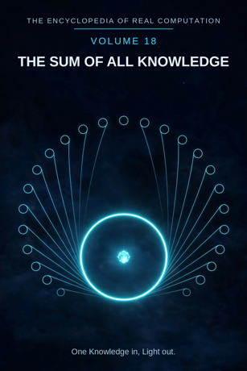

Chron.
The Encyclopedia of Real Computation

One Knowledge in, Light out.
One Knowledge in, Light out.
This volume is the capstone, and it is built differently from the seventeen before it. It has no computation of its own and no twenty-four chapters of terms. It gathers: the shelf entire, the closes of every volume, the sum of every volume in both lanes, the grid on which every term of every volume stands, the Sum of All Knowledge itself, and - last, by the book's own discipline - everything the whole encyclopedia could not finish, named in one place. It was built last. It is finished only when the shelf is.
VOLUME 1 .. THE BOOK OF KNOWLEDGE .... the whole grid VOLUME 2 .. MATHEMATICS ............... home: Logic VOLUME 3 .. LOGIC ..................... home: Meta VOLUME 4 .. PHYSICS ................... home: Physics VOLUME 5 .. CHEMISTRY ................. home: Physics VOLUME 6 .. EARTH SCIENCE ............. home: Topos VOLUME 7 .. ASTRONOMY ................. home: Physics VOLUME 8 .. BIOLOGY ................... home: Biology VOLUME 9 .. MEDICINE .................. home: Biology VOLUME 10 . THE MIND .................. home: Cognition VOLUME 11 . SOCIETY ................... home: Sociology VOLUME 12 . HISTORY ................... home: Chronos VOLUME 13 . PHILOSOPHY ................ home: Transcendence VOLUME 14 . LANGUAGE .................. home: Dialectics VOLUME 15 . ART ....................... home: Aesthetics VOLUME 16 . MUSIC ..................... home: Aesthetics VOLUME 17 . THE CRAFTS ................ home: Technics
VOLUME 18 . THE SUM OF ALL KNOWLEDGE .. the shelf, summed
One Book, sixteen Fields, one Sum: 18 volumes.
Every volume of this encyclopedia closes with the same shape of line: what goes in, and what it resolves into. Gathered, in shelf order:
VOLUME 1 ... One Knowledge in, Light out. VOLUME 2 ... One Mathematics in, Truth out. VOLUME 3 ... One Logic in, Soundness out. VOLUME 4 ... One Physics in, the Universe out. VOLUME 5 ... One Chemistry in, the Material out. VOLUME 6 ... One Earth Science in, the Earth out. VOLUME 7 ... One Astronomy in, the Heavens out. VOLUME 8 ... One Biology in, Nature out. VOLUME 9 ... One Medicine in, the Cure out. VOLUME 10 .. One Mind in, Consciousness out. VOLUME 11 .. One Society in, the Common Good out. VOLUME 12 .. One History in, the Lesson out. VOLUME 13 .. One Philosophy in, the Good Life out. VOLUME 14 .. One Language in, the Story out. VOLUME 15 .. One Art in, Beholding out. VOLUME 16 .. One Music in, Anthem out. VOLUME 17 .. One Craft in, the Heirloom out. VOLUME 18 .. One Knowledge in, Light out.
The shelf ends on the line it opened with. That is not a repetition; it is the loop, closed in print: the Answer of the whole returns to the Principle of the first volume, and the first volume's Question is waiting there, as Chapter 2 of the Book said it would be.
Each volume was summed in two lanes: the tally, which counts, and the sigma reading, which reads the whole as one. Here they stand together, in shelf order.
VOLUME 1 - THE BOOK OF KNOWLEDGE. Tally: the Knowledge computation entire - 16 Fields for its set, a 64-cell domain, 24 chapters, and one running example, a kettle coming to the boil, followed through every term. Sigma: read whole, +1 - one knowledge, with Ignorance counted in its measure and its Questions shown before its Light.
VOLUME 2 - MATHEMATICS. Tally: 8 branches for its set, a 32-cell domain, 6 contexts, 24 chapters, and one running example, the diagonal of a square, measured honestly until it founded the real numbers. Sigma: read whole, +1 - one mathematics, its Undecidable named and its Conjectures labelled.
VOLUME 3 - LOGIC. Tally: 4 forms for its set - Propositional, Predicate, Modal, Syllogistic - 24 chapters, and one running example: all men are mortal; Socrates is a man. Sigma: read whole, +1 - one logic, its Fallacies kept where they can be watched and its Paradoxes carried openly.
VOLUME 4 - PHYSICS. Tally: 6 branches for its set - Mechanics, Optics, Heat, Electromagnetism, Relativity, the Quantum - 24 chapters, and one running example, a falling stone, timed. Sigma: read whole, +1 - one physics, its Anomalies counted as data and its Models shown as options, not decrees.
VOLUME 5 - CHEMISTRY. Tally: the Groups of the Periodic Table for its set, 118 kinds beneath them - all 6,903 pairs of those kinds already figured in the Book of Combinations - 24 chapters, and one running example, water made from two gases. Sigma: read whole, +1 - one chemistry, Separation kept inside it as a term and the unmade Compounds standing as its spread.
VOLUME 6 - EARTH SCIENCE. Tally: 4 spheres for its set - Lithosphere, Hydrosphere, Atmosphere, Biosphere - 24 chapters, and one running example, one cliff face read layer by layer. Sigma: read whole, +1 - one earth science, the Unseen carried honestly beneath every map it draws.
VOLUME 7 - ASTRONOMY. Tally: 6 bodies for its set - Star, Planet, Moon, Comet, Nebula, Galaxy - 24 chapters, and one running example, one planet followed for a season. Sigma: read whole, +1 - one astronomy, the Dark left dark in its pages and the unvisited Worlds listed as its inheritance.
VOLUME 8 - BIOLOGY. Tally: 5 kingdoms for its set - Animals, Plants, Fungi, Bacteria, Archaea - 24 chapters, and one running example, one finch on one island. Sigma: read whole, +1 - one biology, the Extinct counted in its Tree and the Variations spread before its Nature.
VOLUME 9 - MEDICINE. Tally: 6 systems for its set - Circulatory, Nervous, Respiratory, Digestive, Skeletal, Muscular - 24 chapters, and one running example, one patient with a fever, followed from the door to the cure. Sigma: read whole, +1 - one medicine, the Illness faced in its own chapters and its Treatments kept as an honest spread.
VOLUME 10 - THE MIND. Tally: 6 faculties for its set - Perception, Memory, Attention, Language, Reasoning, Feeling - 24 chapters, and one running example, one cup of coffee, perceived closely. Sigma: read whole, +1 - one mind, the Unconscious admitted as its shadow-state and its Possibilities left open on purpose.
VOLUME 11 - SOCIETY. Tally: 6 institutions for its set - the Family, the School, the Workplace, the Market, the Town, the State - 24 chapters, and one running example, one small town, held together. Sigma: read whole, +1 - one society, the Stranger counted inside its borders and its Movements named as its future.
VOLUME 12 - HISTORY. Tally: 6 eras for its set - Ancient, Classical, Medieval, Early Modern, Modern, Contemporary - 24 chapters, and one running example, a single dated day, reconstructed whole. Sigma: read whole, +1 - one history, the Forgotten mourned in its own ledger and its Interpretations printed beside its facts.
VOLUME 13 - PHILOSOPHY. Tally: 6 branches for its set - Metaphysics, Ethics, Logic, Aesthetics, Epistemology, Politics - 24 chapters, and one running example, one question: what is a good life? Sigma: read whole, +1 - one philosophy, the Doubt kept as its state and the Schools spread as its standing options.
VOLUME 14 - LANGUAGE. Tally: the Tongues for its set, family by family across the world - 24 chapters, and one running example, one sentence carried across three languages. Sigma: read whole, +1 - one language, the Unsaid honoured as a term and its Dialects gathered before its Story.
VOLUME 15 - ART. Tally: the Studies for its set, its seed figured from the canon computation - Marks and Technique, Artwork the product - 24 chapters in the volume's pattern, and one running example, one drawing, from blank page to beheld. Sigma: read whole, +1 - one art, the Blank counted before the first mark and its Styles spread after the last.
VOLUME 16 - MUSIC. Tally: the Notes for its set, its seed the canon Music 2.0 - Sound and Playing, the Song the product - 24 chapters, and one running example, one tune, from first note to anthem. Sigma: read whole, +1 - one music, Silence measured inside it and its Genres standing open as its spread.
VOLUME 17 - THE CRAFTS. Tally: 6 trades for its set - Carpentry, Smithing, Weaving, Pottery, Masonry, Glasswork - a 24-cell domain, 6 contexts, 24 chapters, and one running example, one chair, from board to heirloom. Sigma: read whole, +1 - one craft, its Broken counted and its Techniques shown.
VOLUME 18 - THE SUM OF ALL KNOWLEDGE. Tally: the shelf itself - 18 volumes, gathered below in the Sum's own section. Sigma: read whole, +1. The gathering does not add a nineteenth thing; it reads the eighteen as one, the way each volume reads its own terms as one.
Every term in every volume stands somewhere, and the somewhere is an address. The grid comes from the original Book of Knowledge, and it is built of three sixteens:
16 DOMAINS: Void, Logic, Physics, Biology, Cognition, Sociology, Technics, Aesthetics, Ethics, Chronos, Topos, Entropy, Syntropy, Dialectics, Transcendence, Meta.
16 CONTEXTS: Definition, Premise, Observation, Interaction, Governance, Manifestation, Negation, Exclusion, Magnitude, Locality, Composition, Sentiment, Objective, Recurrence, Flux, Evaluation.
16 SETS: Archetype, Axiom, Objective, Unit, Sequence, Result, Null-Principle, Null-State, Aggregate, Frame, Field, Mood, Vector, Loop, Increment, Emergent.
The sets nest inside the domains, and the domains inside the contexts: N inside D inside C. An address names one point: this domain, in this context, at this set. Counted plainly: 16 domains x 16 contexts x 16 sets = 4,096 named addresses, and every field volume's home domain in the At a Glance above is the first word of its terms' addresses.
THE TWO PRINTINGS, RECORDED PLAINLY. The original book prints its address arithmetic two ways. In its architecture, the address runs (Domain x 1024) + (Context x 16) + Set, with the contexts taking 64 slots - which gives the wide printing: 16 x 64 x 16 = 16,384 points. In its final synthesis it prints (Domain x 256) + (Context x 16) + Set - 16 contexts of 16 sets - which gives the 4,096 above. Both printings are the book's own. The ruling between them stands open in the book itself, and this volume records both, side by side, rather than choosing for it: 4,096 named addresses on the narrow printing, 16,384 on the wide. The shelf's work does not wait on the ruling; the Crossings of every volume use addresses either way, and a point found on one printing is a point on the other.
Twenty-four terms to a volume, eighteen volumes on the shelf, one grid beneath them all. Now the Sum the whole encyclopedia promised, computed the way this system computes everything: in two lanes, side by side, neither cancelling the other.
THE TALLY LANE. Count the possible knowledge as the map lays it out. Every field read through every dimension: 22 x 16 = 352 field-figures. Every point placed on the grid: 16 domains x 16 contexts x 16 sets = 4,096 addresses - 16,384 on the wider printing, both recorded above. Every dimension read through every dimension: 22 x 22 = 484 identities, the Identities Square. And the whole of it bound: 18 volumes. The tally is finite, and large, and honest about its edges: the set of fields is open underneath, the addresses hold more than has been found, and the questions at sigma-prime outnumber the answers at Omega. The tally says: this much, at least, is the shape of what can be known.
THE SIGMA LANE. Read in the model's own way, each complete row sums to +1, and the whole grid - all fields, all dimensions, all addresses together - sums to +1. One knowledge, whole. The tally counts the points; the reading says the points were never separate. Both lanes are printed here because the tension between them is not an error in the system - it is the system, saying the truest thing it knows in its two native voices: knowledge is many, and knowledge is one.
THE EQUATION. The original book wrote it once, at the front:
Omega = lim(h-bar -> 0) Sigma [ (Gamma(E) x Delta(F)) / sigma(e) ] over h-bar
Everything, resolved at the finest grain there is. The total, taken as the observation moment shrinks to the least unit - every field's wonder and revision, weighted by its spread, summed entire. This encyclopedia has been that equation, unfolded into eighteen volumes.
THE CLOSE. The Answer loops back to the Root. Light shows the next Question; the Question roots the next Knowledge; and the figure stands ready to run again, on any subject, in any field, at any address. That is the last thing the Sum of All Knowledge turns out to mean: not a total that ends the counting, but a whole that can be entered - by any knower, at any datum, one lesson at a time.
One Knowledge in, Light out.
Every volume ends by naming what it could not finish - its sigma-prime, the spread of what stands open. Gathered here, they are the shelf's capital: the specific, named shape of its next growth, kept where the next reader cannot miss it.
VOLUME 1 - QUESTIONS: what is still asked, in every field at once - the spread the Book was founded to keep open. VOLUME 2 - THE CONJECTURES: the Riemann hypothesis, Goldbach's even numbers, the twin primes - and whether the system can ever certify its own consistency from inside. It cannot; its own Chapter 8 says so, and the saying is part of its truth. VOLUME 3 - THE PARADOXES: the liar and its kin, still patrolling the border where soundness meets its own shadow. VOLUME 4 - THE MODELS: which of the rival models the universe actually runs on, at the scales no experiment has yet reached. VOLUME 5 - THE COMPOUNDS: the unmade substances - more numerous than the made, each one a material nobody has held yet. VOLUME 6 - THE FORMATIONS: the layers not yet read - underground, under the sea, and under the ice. VOLUME 7 - THE WORLDS: the planets no telescope has resolved, and the moons of the ones it has. VOLUME 8 - THE VARIATIONS: the species uncounted, the species unborn, and the ones being lost while the counting goes on. VOLUME 9 - THE TREATMENTS: the cures not yet found for illnesses already named, dosed, and charted. VOLUME 10 - THE POSSIBILITIES: what a mind might yet become aware of, in faculties it does not currently list. VOLUME 11 - THE MOVEMENTS: the forms of belonging not yet tried, in towns not yet founded. VOLUME 12 - THE INTERPRETATIONS: the pasts not yet honestly told, and the records still sealed in the Archive. VOLUME 13 - THE SCHOOLS: the positions not yet taken on the oldest questions - the good life still being examined. VOLUME 14 - THE DIALECTS: the tongues never written down, and the sayings that will die with their last speakers unless the Retelling reaches them first. VOLUME 15 - THE STYLES: the ways of seeing not yet beheld - the blank pages of the Studies, still blank. VOLUME 16 - THE GENRES: the sounds not yet played, in rooms not yet built, on instruments not yet made. VOLUME 17 - THE TECHNIQUES: the ways of making not yet tried - and the old ways, lost with their last makers, recoverable if at all from the things they left behind. VOLUME 18 - THIS VOLUME'S OWN: which printing of the grid - 4,096 or 16,384 - the book will finally rule; and what a nineteenth volume would be, if the shelf ever grows. The Sum keeps its own spread open, like every volume it gathers.
THE ICON TABLE - standing, identical at the front of every volume of this encyclopedia:
◉ ..... A - Principle ◎ ..... B - Purpose ◉·◉ ... A.A - the Alpha ◉·◎ ... A.B - the Cross △ ..... X - Primitive ⚙ ..... Y - Protocol ⬢ ..... Z - Product ◐ ..... i - State ⚖ ..... j - Condition ⊞ ..... N - Set ◷ ..... h - Time ▣ ..... C - Context ▦ ..... D - Domain ♥ ..... E - Emotion ➤ ..... F - Intention ↻ ..... pi - Cycle ➔ ..... phi - Step ⚄ ..... e - Probability • ..... h-bar - Planck, the Least Σ ..... sigma - Summation ◈ ..... gamma - Scale Δ ..... delta - Change ⁂ ..... sigma-prime - Options Ω ..... Omega - Answer
ADDRESS INDEX: the whole grid stands in THE WHOLE GRID, above; the ruling between its two printings stands open and is recorded there, both numbers kept. GLOSSARY: tally lane - the count, plainly added. sigma lane - the reading of a whole as one. address - one point of knowledge: a domain, in a context, at a set. capstone - the last stone, which is also the keystone: it locks the arch by completing it.